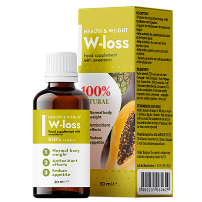
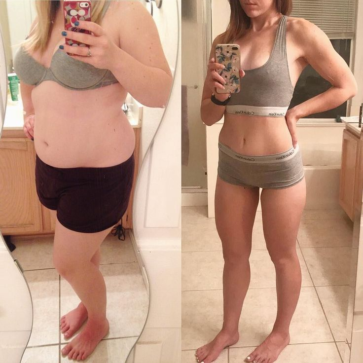
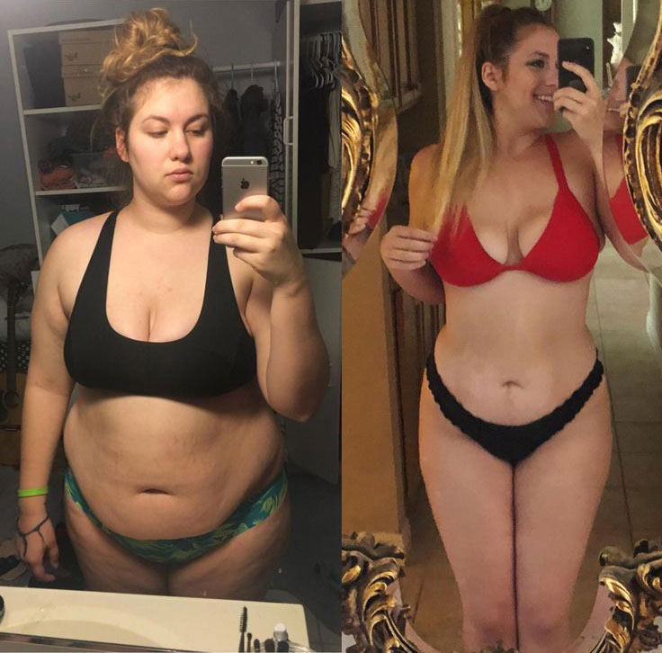

Paprastas lieknėjimo būdas – šiuolaikinės dietologijos protrūkis?
Paskutinis atnaujinimas: 12.05.2021Pagal oficialios statistikos duomenis pasaulyje yra apie 1,9 milijardo žmonių su antsvoriu. Šis skaičius nuolatos auga. Pagrindinė greito nutukimo priežastis – žmonės nemoka teisingai lieknėti ir palaikyti normalų svorį. Norėdami numesti nereikalingus kilogramus, daugelis laikosi dviejų taisyklių: reguliarios alinančios treniruotės ir kalorijų skaičiavimas. Tokį ritmą ne kiekvienas gali atlaikyti, dėl ko atsitinka protrūkių. Organizmas patiria stresą, dėl ko svoris dar labiau auga.
Dietologė Kotryna Rudokienė sugriovė visus lieknėjimo stereotipus ir atskleidė paprastą bei veiksmingą būdą sulieknėti.

– Sveiki! Papasakokite, kodėl pastaruoju metu tiek daug žmonių kenčia nuo nutukimo?
– Sveiki. Pirmasis veiksnys – maitinimas. Svarbu, ką valgote ir kiek. Deja, šiais laikais sunku laikytis tinkamos mitybos įpročių. Parduotuvių lentynos užgriautos greitu maistu, saldumynais, gazuotu vandeniu ir kitu žalingu maistu, kuriam sunku atsispirti.
Taip pat yra antraeilių veiksnių, turinčių įtakos nutukimui: paveldimumas, gyvenimo būdas ir ekologija. Tačiau dabar mums yra svarbiau išsiaiškinti, kodėl negalime numesti svorį, o ne kodėl jis auga.
– Taip, tikrai, kodėl taip sunku numesti svorį?
Per savo 12 metų praktiką mačiau pakankamai nutukusių žmonių, kuriems nebuvo net 30 metų. Problema slypi medžiagų apykaitoje. Ji sulėtinama, riebalai kaupiasi daug greičiau, o griežtos dietos tik skatina jų aktyvų kaupimąsi
– O štai čia, prašau papasakoti išsamiau. Norite pasakyti, kad dietos nepadeda sulieknėti?
– Ne visai taip. Žinoma, tinkama ir saikinga mityba dar niekam nepakenkė. Tačiau griežtos dietos, kurios buvo itin populiarus prieš 5-10 metų, neturi jokios naudos. Paaiškinsiu, kaip tai veikia.
Kai pradedate griežtą dietą, organizmas negauna pakankamai jam reikalingų medžiagų. Smegenys laiko tai grėsme ir pradeda dvigubai greičiau kaupti riebalų atsargas juodai dienai.
Taigi, norėdami atsikratyti nereikalingų kilogramų, atvirkščiai juos aktyviai kaupiame. Todėl labai svarbu sukurti tinkamą racioną. Kai maitinatės gausiai, bet netinkamai, organizmas taip pat negauna reikiamų medžiagų ir toliau kaupia riebalus, o ne paverčia juos energija.

– Ar galima numesti svorio, sportuojant, bet nekeičiant raciono?
– Fizinis krūvis labai svarbus. Tačiau sportas yra tik 20-30% lieknėjimo. Ne tiek prarandate svorio, kiek stiprinate raumenis, jeigu treniruotės parinktos tinkamai. Pagrindinė svorio netekimo priežastis yra mitybos reguliavimas. Būtent todėl daugelis nesportuoja, bet greitai praranda svorį, pakeitę mitybą.
Sveiko maisto parduotuvės
– Yra įvairių būdų: operacijos, kosmetinės injekcijos, anticeliulitiniai masažai ir apvyniojimai. Tačiau visi jie yra mažai efektyvūs be specialios mitybos. Todėl veikia tik tas lieknėjimo metodas, kuriame kruopščiai apmąstytas racionas. Jis turi sudaryti visus organizmui būtinus vitaminus ir mineralus, įskaitant tuos, kurie skatina medžiagų apykaitos pagreitinimą. Tik tokiu atveju svoris pradės mažėti.
Tokį racioną nustatyti yra sunku ir brangu. Todėl rekomenduoju pirkti specialius natūralius papildus lieknėjimui.
– Papasakokite apie kokį nors papildą.
– Manau, labiausiai efektyvus papildas yra . Jo sudėtyje yra visos organizmui reikalingos medžiagos. Su juo galima negalvoti apie tinkamą mitybą. Pagrindinis jo privalumas yra greitas veikimas. Poveikį galima pamatyti pirmą savaitę!

Rekomenduoju žmonėms, turintiems įvairaus laipsnio nutukimą. Vartojimas rezultatas visada yra vienas – apie 40% riebalų masės praradimas per vieną kursą su minimaliu raumenų masės praradimu. yra tikras šiuolaikinės dietologijos perversmas!
– Anksčiau nesu girdėjusi apie tokius papildus. Atvirai kalbant, pati netikiu tuo, kad galima taip paprastai atsikratyti nereikalingų kilogramų.
Tai tikrai kažkas neįprasto. Daugelis tebemano, kad lieknėjimui reikia dėti kokias nors neįtikėtinas pastangas. Tačiau šiuolaikinė medicina padarė didelę pažangą ir lieknėjimo procesas tapo daug lengvesnis, nei prieš 5 metus. Mano pacientai taip pat iš pradžių abejojo, kai rekomendavau jiems . Tačiau jų rezultatai kalba patys už save.

– Tai stulbinama. Kiek svorio galima tokiu būdu numesti per mėnesį?
– Viskas priklauso nuo kūno masės indekso, vandens balanso, riebalų, raumenų ir kaulų masės procento. Vidutiniškai svoris sumažėja 5-10 kilogramų per vieną kursą. Tačiau būna ir kitų rezultatų. Pateiksiu pavyzdį. Vienas iš mano pacienčių, būdama 28 metų ir 165 centimetrų ūgio, svėrė 99 kilogramus.
Nekūriau dietos, o rekomendavau užsiėmimus sporto salėje. Išrašiau mėnesinį kursą ir paprašiau pacientę rašyti dienoraštį, kuriame ji kiekvieną savaitę fiksuotų savo rezultatus:
1 SAVAITĖ
Miego kokybė pagerėjo ir atsirado daugiau energijos.
Apimtys:
- krūtinė: -3 cm
- pilvas: -4 cm
- klubai: -3 cm
Svoris: -3 kg
2 SAVAITĖ
Pacientė pabrėžė, kad sotumo jausmas atsiranda po pusės įprastos maisto porcijos. Nekontroliuojamas apetitas dingo.
Apimtys:
- krūtinė: -6 cm
- pilvas: -8 cm
- klubai: -8 cm
Svoris: -6 kg
3 SAVAITĖ
Pacientė pabrėžė, kad jaučiasi gerai, netgi po tų produktų, kurie paprastai sukeldavo diskomfortą žarnyne: pieno produktai ir ankštiniai. Tai reiškia, kad virškinimo procesas atsistatė ir neleidžia produktams kauptis ant žarnyno sienų bei skatinti rūgimo procesą.
Apimtys:
- krūtinė: -7 cm
- pilvas: -11 cm
- klubai: -10 cm
Svoris: -12 kg
4 SAVAITĖ
Pastebėtas žvalumas per visą dieną ir darbingumo padidėjimas. Analizės taip pat užfiksavo gliukozės lygio kraujyje sumažėjimą. Eksperimento pabaigoje riebalų kiekis tiriamojo objekto organizme sumažėjo 9 procentais ir svyravo tarp bendrų normų - 27%.
Apimtys:
- krūtinė: -8 cm
- pilvas: -14 cm
- klubai: -12 cm
Svoris: -18 kg
Šis eksperimentas įrodė, kad yra veikianti priemonė. Jos aktyvūs komponentai žymiai pagerina virškinimą, medžiagų apykaitą ir angliavandenių keitimąsi. Su šia priemone organizmas pradeda aktyviai deginti ne tik visas suvartotas kalorijas, bet ir sukauptus riebalus, paversdamas juos energija. Būtent todėl kurso metu pacientai pastebi didelę jėgų bangą.
Ačiū jums už atvirą interviu. Manau, dabar padėjote daugeliui žmonių, ir dabar jiems bus daug lengviau atsikratyti antsvorio. Liko tik vienas klausimas: kur galima įsigyti šią priemonę?
– Preparatas jau perėjo visus būtinus testavimo etapus ir gavo atitinkamus kokybės sertifikatus. Galbūt šiais metais pasirodys vaistinėse, bet kol kas jį galima įsigyti tik oficialiame gamintojo tinklalapyje. Man, tiesą sakant, patinka užsisakyti tiesiogiai. Taip, esu visiškai apsaugota nuo klastočių ir labai dažnai gaunu nuolaidas.


O aš maniau, kad man trūksta valios. Bandydavau taikyti griežtas dietas, o svoris beveik nepasitraukdavo. Ačiū už išsamų paaiškinimą. Dabar suprantu esmę.
Dietologas man taip pat skyrė . Vartojome kartu su vyru. Jis numetė 17 kg, o aš - 12. Esame labai patenkinti rezultatu. Beje, sporto salės nelankome, o treniruojamės namie.
Kodėl kai kurie valgo ir lieka liekni, o kiti visaip stengiasi apriboti save, o svoris nesitraukia?
Viskas priklauso nuo medžiagų apykaitos. Jeigu ji pas jus bloga, bet kokiu atveju storėsite. Ši priemonė padeda pagreitinti medžiagų apykaitą, kad organizmas pats atsikratytų nereikalingo. Labai naudinga priemonė.
Aš visai neturiu valios. Kelis kartus bandžiau taikyti dietas - užtenka daugiausia 3 dienoms.
Norint numesti svorio, reikia arti sporto salėje po kelias valandas! Per pusmetį atsikračiau 10 kg.
Man skubiai reikia šios priemonės! Dietos visiškai nepadeda. Aš ir negaliu jas taikyti. Valios nėra. Pagaliau sugalvojo kažką mums, tinginiams:)
Galbūt dietos nėra pagrindinis dalykas, o saldumynų tikrai valgyti nereikia, jeigu norite atsikratyti riebalų. Patikrinta.
Sukauptų riebalų savarankiškai atsikratyti labai sunku. Būtinai reikia pagalbos. Anksčiau vartojau kitus priedus, bet jie vis tiek neturi jokio poveikio. Skirtingai, nei . Kompleksinis preparatas visgi geresnis. Būdama 43 metų visiškai atsikračiau celiulito ir papildomų riebalų. Netgi ne maniau, kad tai įmanoma.

Labai pavargau būti stora. Niekaip negaliu pašalinti pilvo. Rankos taip pat storos. Negaliu netgi marškinių užmauti. Nuolatos tenka kažką mauti iš viršaus, nes turiu kompleksų. Taip pat išbandysiu šią priemonę.
Taip pat vartoju . Po gimdymo su juo numečiau 19 kg.
